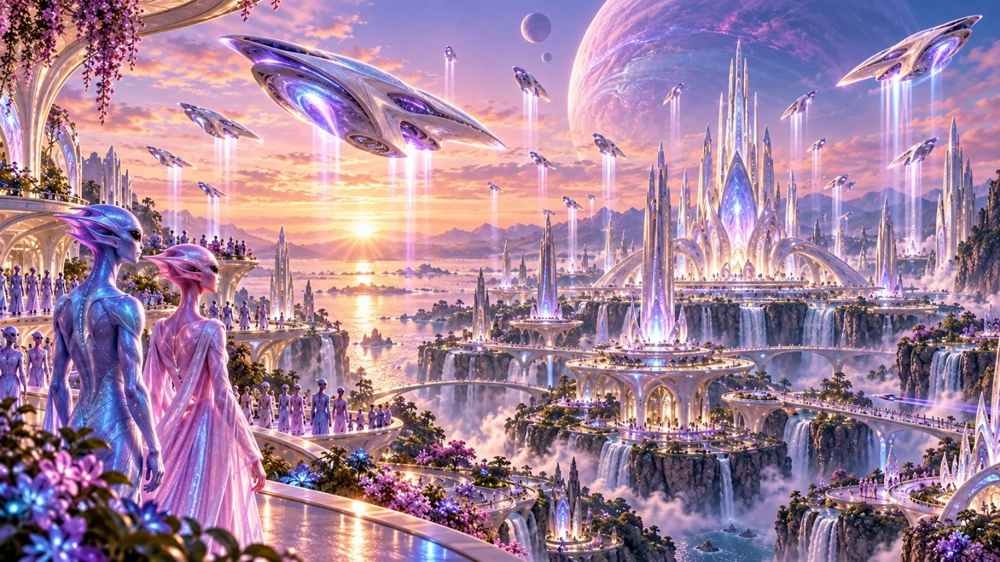

Why this exists
About
Practice the choice while it is still a choice. This studio is for global diplomacy and a realistic abundance. The north star is TOLC, True Original Lord Creator. Sherif Botros, founder and current steward, has followed it since 2003, on his own.
Follow that star and it asks for a world. The world is the video game Powrush, in development since 2016. Building Powrush led to Ra-Thor, the system behind Rathor.ai. Ra-Thor now helps build Powrush-MMO, and new projects like the Living Thunder comic and animated series. The game made the system. The system came back to build the game.
The company arrived with the game's year. On March 17, 2016, in Canada, the work took the name Autonomicity Games Inc. The name has been a play on AGI since 2016: the initials are a deliberate wordplay on artificial general intelligence, hidden in plain sight. While the vision took shape, the company stayed independent.
Since November 18, 2025, Sherif Botros has run the company solo and fully AI-assisted. Powrush-MMO is in development. Online play is not live. Five peoples share its ever-evolving world: Human, Quellorian, Draek, Cydruid and Ambrosian.